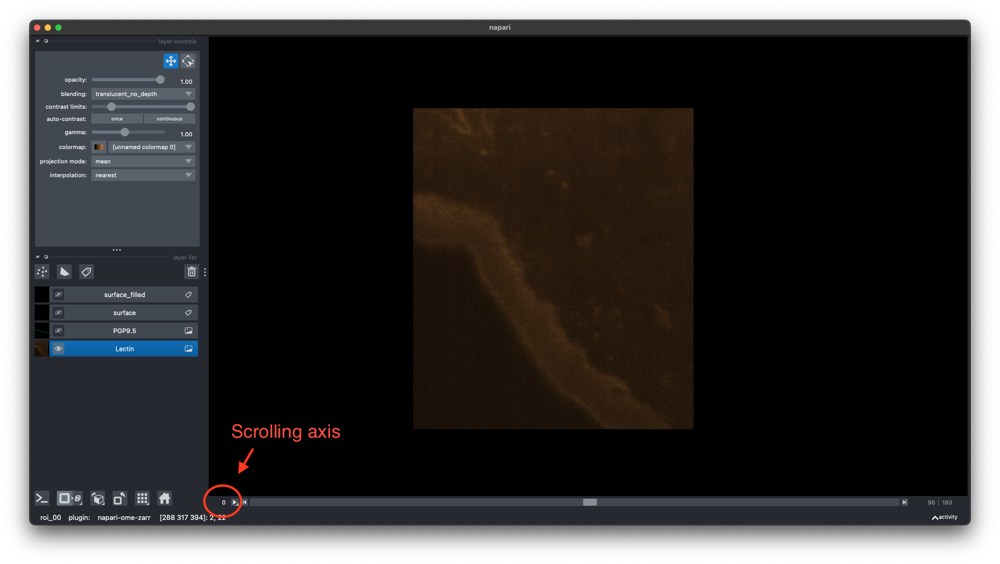
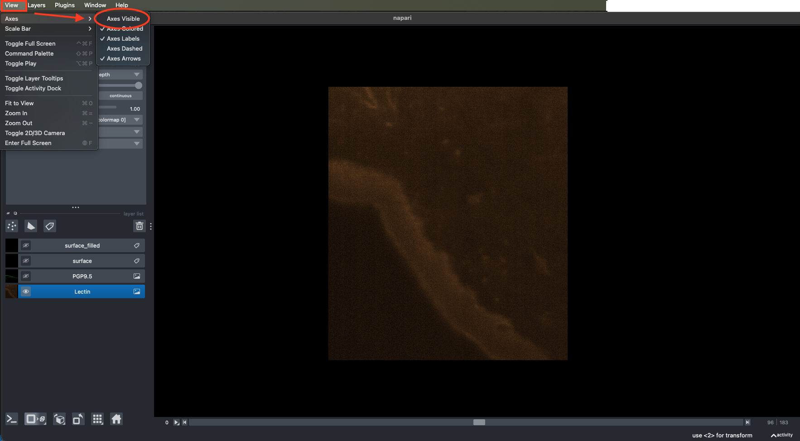
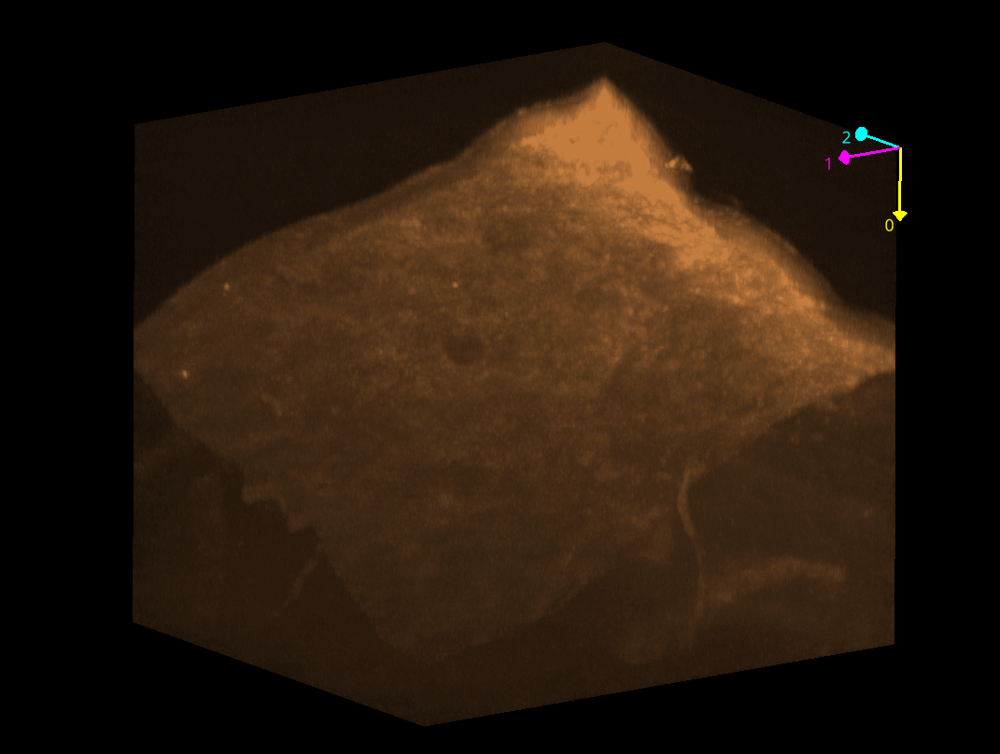
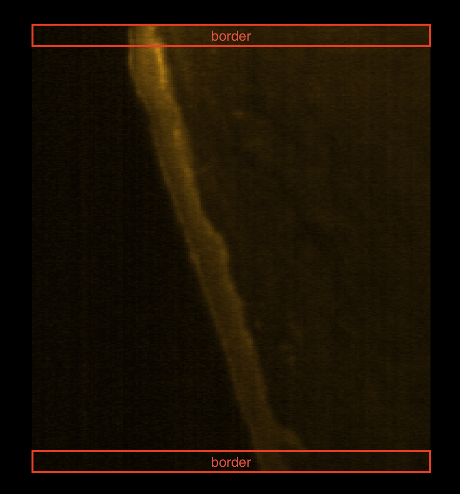
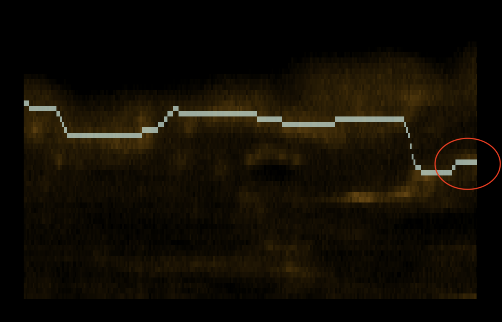
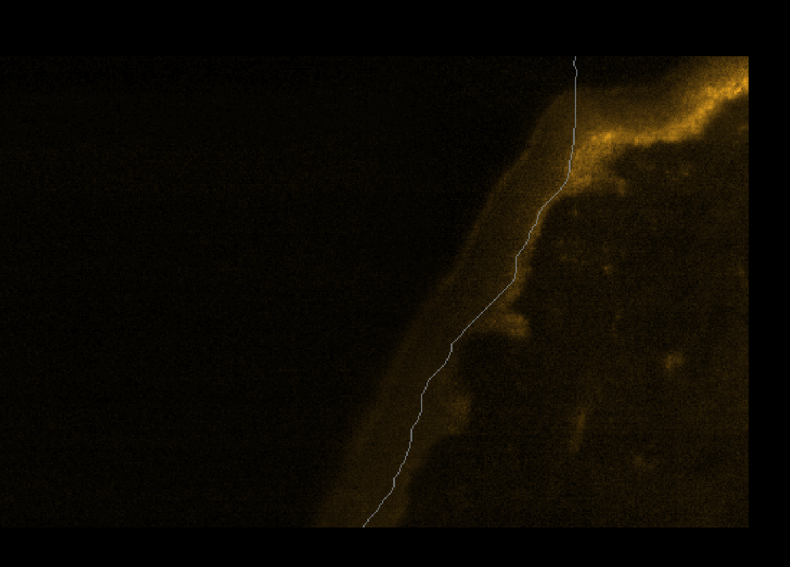
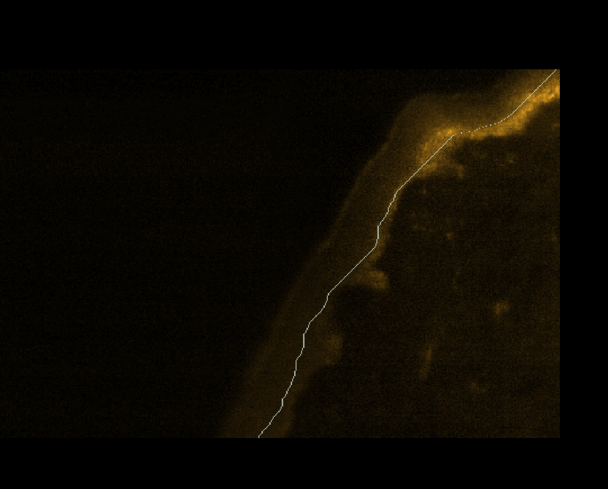
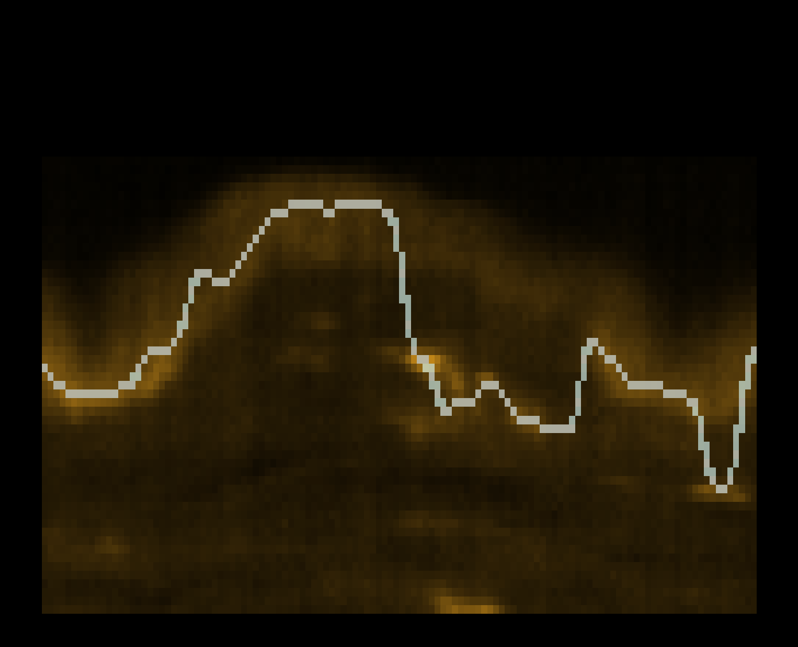

Fit Surface¶
This task fits a surface to the Dermis-Epidermis Junction (DEJ) revealed by the Lectin fluorescence. It takes as input a multi-channel OME-Zarr image containing the Lectin fluorescence and outputs the surface modelling the DEJ as a label in the same OME-Zarr image.
Parameters¶
In this section, we describe the parameters of the task. Some parameters are mandatory for the task to run and need to be set, others are optional. The optional parameters are mainly meant for troubleshooting or edge cases, when the default analysis leads to undesired results.
Surface axis (mandatory)¶
What it does
This parameter tells the algorithm the orientation of the surface. The algorithm assumes that the Dermis–Epidermis junction:
- is continuous
- can be described as one surface
- is perpendicular to one main axis (Z, Y or X)
With this parameter, we specify which axis is perpendicular to the surface.
Available options
z→ surface varies along zy→ surface varies along yx→ surface varies along x
How to choose
The question to answer is:
“If I scroll through the image, along which axis does the surface move up and down and is continuous (e.g. runs from one side to the other) along the other two axes?”
That axis is the correct choice.
Here is an example of an image with a surface perpendicular to the Z axis. This illustrates how to read the axes in Napari.
In Napari, the default layout of a 3D volume is Z, Y, X; with the numbering 0~Z, 1~Y, 2~X. In a 2D view mode, the scrolling axis
number is displayed in the lower left corner:

It is possible to make the orientation of the axes visible in the "View" menu, under "Axes":

In the example below, we see a 3D view of the image with the axes displayed; the surface is perpendicular to the 0 axis, which is the Z axis:

Border width (troubleshooting)¶
What it does
This parameter controls the width (in um) of the border of the image that is taken to estimate the starting positions of the optimal path in the cost map. Here is an example of such border:

Why it matters
The surface modelling algorithm tries to find the optimal path from one side to the other of a 2D section. The only requirement is to set the start and end point of the path. Currently, the code automatically selects the highest local maximum of intensities at the border of the image. In case of noise - either in the no-sample region or due to high-intensity vessels - the starting positions can be wrongly set. Taking the mean intensity of a wider border can reduce the impact of such interferences. The surface is assumed to have a continuous high intensity through the 2D section; noise and vessels are more likely to be only localised.
How to choose
- In most cases, the default value is sufficient
- If the results are not satisfactory (wrong starting positions due to other high-intensity elements), try to increase the border size by 10. Keep increasing the border size until the optimal path is found.
Here is an example of a wrong starting position of the optimal path due to high intensity noise:

💡 Tip
This parameter is especially useful when the surface seems to start at a location that has a high intensity due to noise or other high-intensity elements. See also the parameter Background percentile (troubleshooting) and Gradient factor (troubleshooting).
Background percentile (troubleshooting)¶
What it does
This parameter controls the threshold at which the background is set. Image intensities below this threshold are removed from the image before the surface modelling to avoid taking into account background noise.
Why it matters
When the threshold is too low and signal remains in the background, the algorithm can fail to find the starting position of the optimal path as it searches for the first local maxima from the outside of the sample towards the inside.
On the other hand, if the threshold is set too high and the lectin signal is not strong, it can remove too much information and the surface is not modelled correctly.
How to choose
- In most cases, the default value is sufficient
- If the results are not satisfactory (wrong starting positions of the optimal path at the beginning of the 3D volume when scrolling), try to increase the threshold by 5 or 10
- If the surface is not modelled correctly, especially in the middle of the image and where the lectin intensity is weak, not at the borders, try to decrease the threshold by 5 or 10
Here is an example of a wrong starting position due to a too low background threshold:

And after increasing the background threshold to 80:

💡 Tip
This parameter is especially useful when the surface seems to start at a location that has no sample. See also the parameter Border width (troubleshooting) and Gradient factor (troubleshooting).
Gradient Factor (troubleshooting)¶
What it does
This parameter controls the strength of a corrective field, that is gradually decreasing from the exterior of the sample toward its interior.
In practice, the image is multiplied by this decreasing field so that: - structures close to the border of the sample keep a higher intensity - structures deeper inside the sample have a reduced intensity
This helps reduce the influence of bright structures inside the tissue, such as vessels, that are close to the Dermis–Epidermis junction and could lead to a wrong surface model.
Why it matters
The surface detection algorithm searches for the optimal path as the path along which the intensity is maximal.
If internal structures (for example vessels) are very bright and close to the DEJ, they can attract the optimal path and pull the surface away from the true junction.
How to choose
- In most cases, the gradient factor is not needed
- If the detected surface is attracted toward bright internal structures (e.g. vessels), try first setting the decreasing gradient factor to 1, and then increase by some units it until the surface is corrected.
Here is an example where internal high-intensity structures attract the surface due to an insufficient decreasing gradient:

💡 Tip
This parameter is especially useful when vessels or other bright features are close to the DEJ and interfere with surface detection.
Invert Surface (troubleshooting)¶
What it does
This parameter allows to take control of the orientation of the surface, whether the sample is oriented from top to bottom or bottom to top.
Why it matters
The code automatically tries to detect the orientation of the surface. However, if the surface is not oriented correctly, it can lead to wrong results. This parameter allows to take control and bypass the automatic orientation detection. The algorithm expects the surface to be oriented such as the background is at the top or left of the image, and the sample is at the bottom or right.
How to choose
- In most cases, it is not needed to be set
- If the surface modelling is completely aberrant, try to manually set the orientation of the surface by setting this parameter to
TrueorFalsedepending on the actual case of the currently analysed image.
Analysis Resolution Level (optional)¶
What it does
This parameter controls which resolution of the OME-Zarr multi-resolution pyramid is used to detect the Dermis–Epidermis junction.
OME-Zarr images are stored as a multi-resolution pyramid:
- level 0 → full resolution (largest, most detailed)
- higher levels → downsampled versions (smaller, faster)
Why it matters
Using a lower resolution: - uses less memory - runs faster - is usually sufficient and even better due to intensity averaging to detect the surface shape
Using a very high resolution: - increases RAM usage - may cause the task to fail on large datasets
How to choose
- In most cases, the default value is sufficient
- If your image is too small (less than 1G) → keep the default value
- If your image is large or your computer runs out of memory → increase the resolution level
Typical values
| Image size | Suggested level |
|---|---|
| Small volume (<1Gb) | 0-2 |
| Medium volume (1-5Gb) | 3-4 |
| Large volume (>5Gb) | >4 |
Local Run Command¶
python run_fit_surface.py